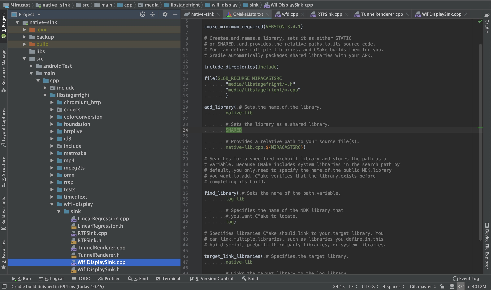

Sink源码概述
Miracast Sink端源码最早出现在Android 4.2.2上，通过googlesource可以很方便的查看：
https://android.googlesource.com/platform/frameworks/av/+/android-4.2.2_r1.2/media/libstagefright/wifi-display/sink/
但是在Android 4.3以后，Google却移除掉了这部分源码，详细的commit记录在：
https://android.googlesource.com/platform/frameworks/av/+/c4bd06130e4c3068ab58a0be88a4f765c2267563
1 | Remove all traces of wifi display sink implementation and supporting code. |
虽然移除了Sink端代码，但是Source端源码是还在的，我们可以通过Android手机的投射功能实现Miracast投屏发送端。
导入源码
这里推荐使用Android Studio进行源码查看，为了方便使用IDE的代码提示及类/方法跳转等相关功能，我们需要搭建好源码环境。首先新建一个Native Project，然后把整个libstagefright相关的源码拷贝到cpp目录中，最好把相关的include头文件也一起导入（因为涉及到很多依赖），然后在CMakeLists.txt中添加这部分源码。重新sync一次，这样就能引用到相关的类与头文件，并且支持代码提示，提高我们查看源码的效率。
1 | include_directories(include) |

RTFSC
Sink端源码主要的核心类就这3个：WifiDisplaySink.cpp、RTPSink.cpp、TunnelRenderer.cpp。我们可以从wfd.cpp这个可执行程序的main()方法看起，看Sink端是如何进行初始化的。
最重要的几行初始化代码在main()函数的最后，几个需要关注的点：
- 创建了
ANetworkSession对象，并启动了内部的NetworkThread，此类主要用来管理通信相关的TCP和UDP连接。 - 创建并启动了
ALooper，并将WifiDisplaySink通过registerHandler()方法关联起来。其中WifiDisplaySink、RTPSink、TunnelRenderer都继承了AHandlr，都实现了onMessageReceived()，可以用来处理异步消息。 - 整个程序采用了
ALooper，AHandler，AMessage这几个类配合完成的异步消息机制，它是Android Native层实现的一个异步消息机制，跟应用层的Handler那一套有点类似。
1 | sp<ANetworkSession> session = new ANetworkSession; |
最后通过关键的sink->start()方法启动WifiDisplaySink，我们来看下里面的操作，以ip和端口这个start()方法为例，post了一个类型为kWhatStart的AMessage对象：
1 | void WifiDisplaySink::start(const char *sourceHost, int32_t sourcePort) { |
RTSP通讯
前面我们说到了WifiDisplaySink继承了AHandler，因此消息最终会回调到onMessageReceived()方法中去处理。这里通过createRTSPClient()方法创建了RTSP的TCP连接，并传入了一个AMessage对象，以用作后面的连接状态与数据的异步通知：
1 | void WifiDisplaySink::onMessageReceived(const sp<AMessage> &msg) { |
当RTSP连接失败或成功后，会通过kWhatError与kWhatConnected进行通知回调。若连接成功建立，则后续会通过kWhatData收到RTSP相关的数据包。这个时候就正式开始RTSP协商与会话建立，涉及到RTSP的M1-M7指令处理。具体的Rqeuest及Response流程可以看前面的RTSP协议分析文章，这里不详细展开。
1 | void WifiDisplaySink::onMessageReceived(const sp<AMessage> &msg) { |
首先判断消息类型，看看是Request还是Response，这里的做法有点暴力，判断RTSP/开头则认为是Response。详细解析看注释：
1 | void WifiDisplaySink::onReceiveClientData(const sp<AMessage> &msg) { |
针对Request部分，我们继续根据RTSP流程进行细化，onOptionsRequest()主要处理Source端M1请求，并且响应完后马上执行sendM2()方法，以确认Source端所支持的RTSP方法请求。
1 | void WifiDisplaySink::onOptionsRequest( |
onGetParameterRequest()则是处理Source端M3请求，并返回自持自身支持的属性及能力，比较重要的几个属性：RTP端口号（传输流媒体用）、所支持的audio及video编解码格式等…
1 | void WifiDisplaySink::onGetParameterRequest( |
onSetParameterRequest()则是处理Source端M4与M5请求，对于M4请求，直接进行常规的Response即可。对于M5，除了Response之外，因为请求中带有wfd_trigger_method: SETUP，会触发Sink端向Source端发送SETUP请求。
1 | void WifiDisplaySink::onSetParameterRequest( |
在sendSetup()方法中，有两个比较重要的点。一是我们初始化了RTPSink，主要用于后续建立UDP连接与处理RTP包。二是在发送完Setup M6请求后，注册了onReceiveSetupResponse()回调。
1 | status_t WifiDisplaySink::sendSetup(int32_t sessionID, const char *uri) { |
在onReceiveSetupResponse()方法的最后我们完成了RTSP中的最后一步，发送PLAY M7请求，告诉发送端可以开始发送流媒体数据了。这个时候Source端会按照Sink指定的UDP端口（SETUP指令中指定）发送RTP数据包，包含音视频数据。
1 | status_t WifiDisplaySink::sendPlay(int32_t sessionID, const char *uri) { |
经过以上代码，RTSP的协商与会话建立就已经完成了，并且能在指定的UDP端口中收到音视频RTP数据包。看完这部分Native代码，我们完全可以在应用层用Socket或者Netty这样的第三方网络框架实现。下面我们继续分析RTPSink中是如何处理RTP的数据包的。
RTP通讯
前面我们提到，在sendSetup()方法中，我们初始化了RTPSink，并且在onReceiveSetupResponse()回调中调用configureTransport()方法，根据对应的RTP与RTCP端口，调用mRTPSink->connect()方法建立UDP连接。
1 | status_t WifiDisplaySink::configureTransport(const sp<ParsedMessage> &msg) { |
在connect()方法中，通过ANetworkSession完成对应RTP与RTCP连接的connect操作。其中RTP与RTCP的Session在init()方法调用的时候已经创建完毕，这里不再展示。
1 | status_t RTPSink::connect( |
前面我们提到了RTPSink继承了AHandler，因此创建相关UDPSession传入的kWhatRTPNotify与kWhatRTCPNotify消息最终会回调到onMessageReceived()方法中去处理。
1 | void RTPSink::onMessageReceived(const sp<AMessage> &msg) { |
在前面的文章中我们也提到，经过多台手机的抓包测试，发现抓到的UDP数据中只包含了RTP数据包，而没有发现RTCP数据包。因此我们这里的分析先不考虑RTCP数据包的处理，直接看RTP包的解析即可。详细解析看注释：
1 | status_t RTPSink::parseRTP(const sp<ABuffer> &buffer) { |
在updateSeq()方法中，会对sequence包序列号进行一些处理，如：丢包间隙过大、重复包、64K周期循环处理等，最终通过queuePacket()方法将MPEG2-TS数据包入队。其中mQueueBufferMsg为TunnelRenderer::kWhatQueueBuffer类型的消息，最终会在TunnelRenderer中进行处理。
1 | void RTPSink::Source::queuePacket(const sp<ABuffer> &buffer) { |
播放阶段
数据包来到了TunnelRenderer，它代表一个呈现通道，会接收queuePacket()解包出来的MPEG2-TS音视频流，然后进行播放。其中TunnelRenderer继承了AHandler，因此消息最终会回调到onMessageReceived()方法中去处理。里面的处理也比较简单，主要是buffer入队操作及环境初始化。
1 | void TunnelRenderer::onMessageReceived(const sp<AMessage> &msg) { |
其中queueBuffer()操作主要将TS包添加到mPackets列表中，其中还对包进行了一些去重与重排序，保证包序列递增。而initPlayer()则对播放环境进行了初始化。详细注释如下：
1 | void TunnelRenderer::initPlayer() { |
TS包入队之后，会通过mStreamSource->doSomeWork()方法将TS包出队，并解析成音视频裸流进行渲染。详细解释如下注释：
1 | void TunnelRenderer::StreamSource::doSomeWork() { |
MPEG2-TS解析
在Native Sink源码中，最终会通过ATSParser.cpp对TS包进行解析，拿出最终的音视频裸流。首先我们来看下调用的入口，在MPEG2TSExtractor::feedMore()方法中，会把数据包切割成一个个188B的标准TS包，并通过feedTSPacket()送入ATSParser开始解析。
1 | status_t MPEG2TSExtractor::feedMore() { |
开始解析TS包（对TS包格式不熟悉的，可以查看之前MPEG2-TS流解析文章），详细解析过程如下注释：
1 | status_t ATSParser::parseTS(ABitReader *br) { |
其中对适配域的解析parseAdaptationField()中比较关键的就是对PCR时钟的解析：
1 | void ATSParser::parseAdaptationField(ABitReader *br, unsigned PID) { |
ATSParser::parsePID()方法开始根据PID对PAT与PMT进行解析，详细解析如下注释：
1 | status_t ATSParser::parsePID( |
我们先来分析下PAT的解析过程，主要是完成[节目编号->PID]的映射解析，详见注释：
1 | void ATSParser::parseProgramAssociationTable(ABitReader *br) { |
紧接着是PMT的解析，主要是完成[ES流->PID]的映射解析，并创建对应的Stream对象，详见注释：
1 | status_t ATSParser::Program::parseProgramMap(ABitReader *br) { |
然后就到了音视频流的解析，调用对应Stream的parse()方法开始进行解析：
1 | bool ATSParser::Program::parsePID( |
Stream解析的过程中，最重要的是payload_unit_start_indicator这个参数。前面我们说到，要获得一帧完整的数据，就需要把连续几个TS包里的Payload数据全部取出来，才能组合成一个PES包。那么payload_unit_start_indicator值为1时代表一个完整的音视频数据包的开始。那么从这里开始，直到下一个值为1的包为止（相同PID的ES流），把所有的这些TS包组合起来就是一个完整的PES包。了解了这个要点，看下面的代码就比较简单了：
1 | status_t ATSParser::Stream::parse( |
flush()操作调用了parsePES()开始对PES包进行解析，然后解析出PES data，详细解析如下注释：
1 | status_t ATSParser::Stream::parsePES(ABitReader *br) { |
总结
最终，通过onPayloadData()回调音视频裸流给MediaPlayer进行解码，进行音视频数据的播放，整个Native Sink端的流程就到此结束了。相信看完上面所有源码解析后，自己写这部分逻辑也不是难事，当然更好的办法肯定是基于Sink端的代码进行移植。
移植Native Sink的难点主要是对Native相关的依赖代码进行隔离，如：ALooper与AHandler异步消息机制、ANetworkSession网络连接部分与foundation包下的相关的实现等，且移植需要一定的C/C++与NDK开发能力。这里建议可以通过Android应用层实现RTSP连接（Socket/Netty）、音视频解码（MediaCodec/FFmpeg）与渲染（SurfaceView/TextureView），然后把底层的RTP、MPEG2-TS解析部分的代码进行移植，这样可以大大减少Native相关的依赖，提高移植效率。